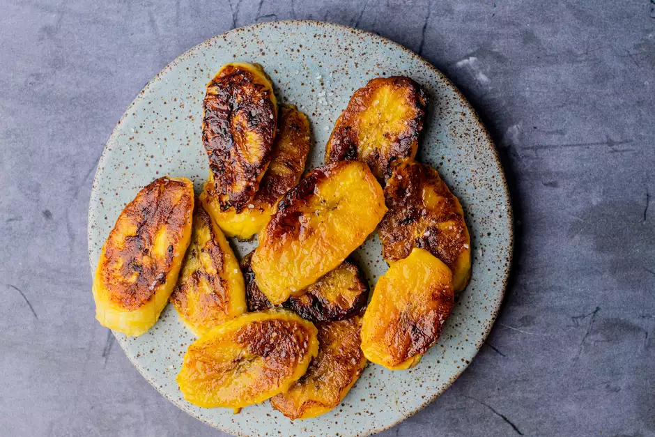

Fried Plantains Recipe

Description
Fried ripe plantains have a crispy, caramelized texture and irresistibly sweet taste.
It's a ubiquitous African dish that is served with almost every meal, and it's enjoyed in other parts of the world as well.
This is a quick and easy recipe that is sure to bring the taste of Africa into your home.
Ingredients
- 2 ripe plantains
- 2 to 3 tablespoons oil (such as canola or vegetable oil), for frying
- Sea salt, optional
Cooking Steps
- Gather the ingredients.
- Peel plantains by cutting off both ends, and cutting a slit down the side of each plantain.
- Remove the plantain peel by peeling it side to side rather than lengthwise. It will come off in sections.
You may need to use the knife at the edge of each section to help loosen it from the flesh.
- Cut the peeled plantains into 1/4-inch-thick slices. Diagonally is preferred because it provides a
larger surface for caramelization; it can be cut straight across into rounds.
- Drizzle just enough oil into a nonstick skillet to coat the bottom of the pan, and place it on medium heat.
- When the oil begins to shimmer, but not smoke, add plantains (work in batches). Fry for 1 1/2 minutes on one side,
flip and cook for 1 minute on the other side.
- Remove plantains from the pan and drain on paper towels.
- Continue frying in batches until all the plantains are fried.
- Sprinkle lightly with sea salt to give a sweet and salty taste to your fried ripe plantains.
- Gather the ingredients.
Recipe from Cynthia Nelson and adapted by Diana Rattray. All rights reserved. Original materials
here.